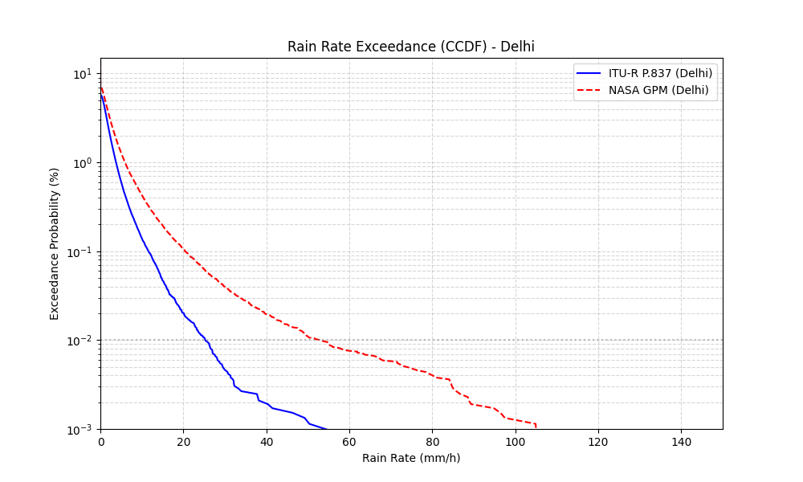
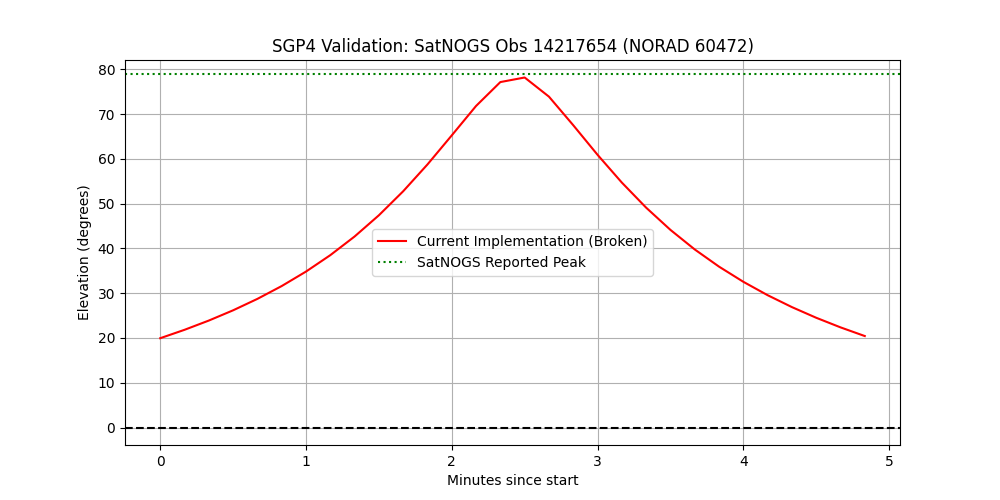
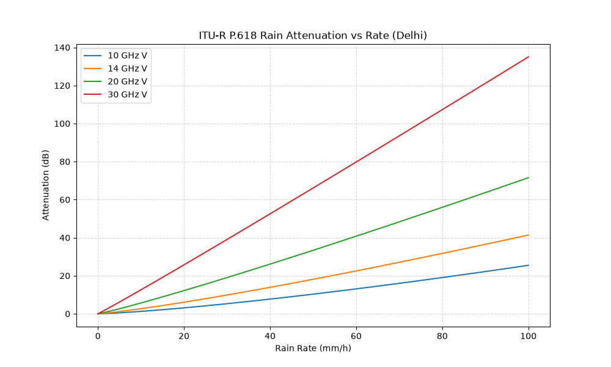

<!DOCTYPE html>
<html lang="en">
<head>
  <meta charset="UTF-8" />
  <meta name="viewport" content="width=device-width, initial-scale=1.0" />
  <title>An Impairment-Centric Learnability Study for Rainfall Retrieval from Satellite Communication Links</title>
  <meta name="description" content="A minimal, typography-first scientific paper and benchmark exploring rainfall retrieval learnability from satellite link telemetry under physical receiver impairments." />
  
  <!-- CSS Stylesheet (Cache-busted) -->
  <link rel="stylesheet" href="styles.css?v=1.0.9" />

  <!-- MathJax for TeX LaTeX Equations -->
  <script>
    MathJax = {
      tex: {
        inlineMath: [['$', '$'], ['\\(', '\\)']],
        displayMath: [['$$', '$$'], ['\\[', '\\]']]
      },
      svg: {
        fontCache: 'global'
      }
    };
  </script>
  <script id="MathJax-script" async src="https://cdn.jsdelivr.net/npm/mathjax@3/es5/tex-mml-chtml.js"></script>
</head>
<body>

  <!-- Top Navigation (Centered & Distributed Layout) -->
  <nav class="distributed-nav">
    <div class="nav-inner">
      <a href="#" class="nav-item brand-anchor">Satyansh Gaur — SatLinkSim</a>
      <span class="nav-item meta-item">Rainfall Narrowcasting Study</span>
      <span class="nav-item meta-item">August 2026 · 25 min read</span>
      <div class="nav-actions">
        <button class="nav-btn" onclick="document.getElementById('impairmentCascadeSec').scrollIntoView({behavior:'smooth'})">Results</button>
        <button class="nav-btn" onclick="document.getElementById('interactiveExplorerSec').scrollIntoView({behavior:'smooth'})">Lab Explorer</button>
      </div>
    </div>
  </nav>

  <!-- Reading Progress Bar -->
  <div class="reading-progress-container">
    <div class="reading-progress-bar" id="readingProgressBar"></div>
  </div>

  <!-- Main Article Body -->
  <main>

    <!-- SECTION 0: HERO & ABSTRACT (Light Section) -->
    <section class="full-bleed-section light-section" id="heroSec">
      <div class="content-column">
        <span class="section-label">OVERVIEW / ABSTRACT</span>
        <h1 class="hero-title">An Impairment-Centric Learnability Study for Rainfall Retrieval from Satellite Communication Links</h1>
        
        <!-- PRE-PRINT & WIP CALLOUT BOX -->
        <div class="wip-callout-box">
          <div class="wip-title">PRE-PRINT & WORK-IN-PROGRESS (WIP) NOTICE</div>
          <p style="font-size: 15px; margin-bottom: 8px;">
            <strong>Code Availability</strong>: The complete codebase, forward simulation engine, and benchmark scripts are publicly available on GitHub at 
            <a href="https://github.com/Satyanshgaur/RainCast" target="_blank" style="color:var(--color-carbon); font-weight:700; text-decoration:underline;">https://github.com/Satyanshgaur/RainCast</a>.
          </p>
          <ul class="wip-list">
            <li><strong>Document Status</strong>: This manuscript is a pre-print and remains a work in progress.</li>
            <li><strong>Methodological & Statistical Limitations</strong>:
              <ul style="margin-top:4px; padding-left:20px;">
                <li><em>Single-Run Point Estimates</em>: The metrics reported here are single-run point estimates derived from a fixed train/test split (Seed 100 train / Seed 200 test). This constitutes a temporal split rather than a stochastic multi-trial robustness check. Ongoing work will incorporate multi-seed trials, error bars, confidence intervals, and formal significance testing.</li>
                <li><em>TCN Reversal under Extreme Noise</em>: Under the "All Impairments" condition (Layer 4), the Temporal Convolutional Network (TCN, $R^2 = 0.0820$) outperforms XGBoost ($R^2 = 0.0081$), reversing the trend observed at every earlier impairment stage. This reversal is under active investigation; our working hypothesis is that the TCN's 1D dilated temporal receptive field preserves structural signal context in regimes where static, tabular rolling statistics collapse under heavy multi-path and mispointing noise.</li>
              </ul>
            </li>
            <li><strong>High-Priority Future Research Roadmap</strong>:
              <ol style="margin-top:4px; padding-left:20px;">
                <li><strong>Validation on real satellite beacon telemetry</strong> (highest priority) — testing retrieval algorithms on operational Earth–space communication links using real beacon measurements.</li>
                <li><strong>Learning observation-model parameters</strong> — estimating tracking jitter, calibration drift, AGC dynamics, multipath, and thermal parameters directly from measured telemetry via Bayesian inference and system identification, so the simulator becomes site-specific.</li>
                <li><strong>Joint observation and retrieval learning</strong> — jointly optimizing latent observation states, receiver calibration, and rain-rate estimation within a unified probabilistic framework.</li>
              </ol>
            </li>
          </ul>
        </div>

        <p class="lead-text">
          Rainfall monitoring underpins hydrological forecasting, flood-warning systems, and climate analysis. Opportunistic microwave sensing over satellite communication links has emerged as a promising complementary technology, yet existing studies typically evaluate machine learning models under idealized observation assumptions. This paper addresses a central research question: <strong>how do realistic receiver and propagation impairments influence the learnability of rainfall retrieval from satellite communication links?</strong>
        </p>

        <p>
          We formulate a forward observation model that integrates SGP4 orbital propagation, ITU-R P.618/P.676 atmospheric attenuation, tropospheric scintillation, Maseng–Bakken stochastic rain synthesis, and stateful multi-satellite handoffs. Using this model, we evaluate four representative learning paradigms — Analytical Inversion, Gradient Boosted Decision Trees (XGBoost), Multi-Layer Perceptrons (MLP), and Dilated Causal Temporal Convolutional Networks (TCN) — across a progressive impairment cascade ($0 \rightarrow 2 \rightarrow 4 \rightarrow 8 \rightarrow \text{All}$).
        </p>

        <!-- Figure 1: Pipeline -->
        

        <p>
          Three findings emerge from this evaluation. First, empirical tracking sweeps show that antenna tracking misalignment ($\sigma_{\text{track}} \ge 0.05^\circ$) is the primary driver of retrieval failure, reducing regressor $R^2$ by $61.6\%$. Second, controlled feature ablations confirm that temporal memory is strictly necessary to prevent model collapse under scintillation ($R^2 = 0.2924 \rightarrow 0.4996$). Third, embedding frequency-dependent physics parameters ($k$, $\alpha$) enables cross-frequency transfer across the 10–30 GHz range ($R^2 = 0.9980$, $\text{RMSE} = 0.28\ \text{mm/h}$), outperforming analytical inversion ($R^2 = 0.1110$) by $84\%$. Taken together, these results indicate that physical observation quality and temporal feature representation exert far greater influence on retrieval learnability than neural network parameter depth.
        </p>
      </div>
    </section>

    <!-- SECTION 1: INTRODUCTION (Dark Section) -->
    <section class="full-bleed-section dark-section" id="introSec">
      <div class="content-column">
        <span class="section-label">SECTION 01 / INTRODUCTION</span>
        <h2 class="section-heading">1. Introduction</h2>
        
        <h3 class="sub-heading">1.1 Motivation</h3>
        <p>
          Accurate, high-resolution precipitation monitoring is critical for urban hydrology, agricultural planning, and extreme-weather mitigation. Traditional monitoring networks — ground rain gauges, weather radars, and passive satellite radiometers — suffer from spatial coverage gaps, high maintenance costs, and long revisit intervals, particularly over oceans and mountainous regions.
        </p>
        <p>
          Commercial Satellite Services (CSS) operating in the Ku (12–14 GHz) and Ka (20–30 GHz) bands maintain continuous Earth–space communication links. Because microwave signals at these frequencies experience attenuation proportional to rainfall intensity, satellite link telemetry (e.g., Signal-to-Noise Ratio) constitutes an opportunistic sensing network (<a href="https://ieeexplore.ieee.org/document/8450708/" target="_blank" style="color:var(--color-plaster-white); text-decoration:underline;">Uijlenhoet et al., 2018</a>; <a href="https://www.pnas.org/doi/10.1073/pnas.1217961110" target="_blank" style="color:var(--color-plaster-white); text-decoration:underline;">Overeem et al., 2013</a>). Standardized AI-ready datasets such as SatRain (<a href="https://ipwg.isac.cnr.it/" target="_blank" style="color:var(--color-plaster-white); text-decoration:underline;">IPWG, 2024</a>) and GPM IMERG (<a href="https://doi.org/10.1175/BAMS-D-19-0270.1" target="_blank" style="color:var(--color-plaster-white); text-decoration:underline;">Huffman et al., 2020</a>) provide reference frames for benchmark validation, and opportunistic-sensing studies using passive geostationary receivers have further demonstrated the feasibility of rain-field estimation (<a href="https://ieeexplore.ieee.org/document/8094957/" target="_blank" style="color:var(--color-plaster-white); text-decoration:underline;">Giannetti et al., 2017</a>). Reconstructing instantaneous rainfall rates from link degradation nevertheless remains an ill-posed inverse problem, governed by non-linear attenuation, tropospheric noise, AGC feedback dynamics, and dynamic orbital tracking.
        </p>

        <h3 class="sub-heading">1.2 Existing Work & Research Gap</h3>
        <p>
          Recent work applies machine learning — analytical inversion, decision trees, 1D CNNs, LSTMs, and TCNs — to microwave-link rainfall retrieval. However, the existing literature exhibits a critical gap: <strong>the influence of specific physical receiver and propagation impairments on inverse learnability has not been systematically isolated with empirical evidence.</strong> Current benchmarks generally assume clean telemetry or simple additive white Gaussian noise, overlooking real-world phenomena such as tropospheric scintillation, antenna tracking errors, receiver AGC compression, LNB thermal drift, gaseous absorption, and satellite handoff step jumps. Without isolating individual impairments through controlled ablation sweeps, it remains unclear whether retrieval errors originate from neural network capacity limits or from fundamental physical unrecoverability.
        </p>

        <h3 class="sub-heading">1.3 Research Plan</h3>
        <p>This paper proceeds in three stages:</p>
        <ul>
          <li><strong>Formulation</strong> — we construct a forward observation model integrating orbital mechanics, atmospheric attenuation equations, stochastic rain synthesis, AGC dynamic compression, and multi-satellite handoffs.</li>
          <li><strong>Evaluation</strong> — we assess model performance across progressive impairment cascades, tracking-error sweeps ($\sigma_{\text{track}} \in [0.00^\circ, 0.50^\circ]$), temporal feature ablations, and cross-frequency transfer (10–30 GHz).</li>
          <li><strong>Grounding</strong> — all discussion and performance claims are grounded in empirical evidence rather than unverified theoretical speculation.</li>
        </ul>
      </div>
    </section>

    <!-- SECTION 2: FORWARD OBSERVATION MODEL & PHYSICAL IMPAIRMENTS (Light Section) -->
    <section class="full-bleed-section light-section" id="modelSec">
      <div class="content-column">
        <span class="section-label">SECTION 02 / FORWARD MODEL & PHYSICAL IMPAIRMENTS</span>
        <h2 class="section-heading">2. Forward Observation Model & Physical Impairments</h2>
        
        <p>
          The forward observation model maps the true instantaneous rain rate $R(t)$ to observable satellite telemetry $\mathbf{x}(t)$:
        </p>
        <p>
          $$\mathbf{x}(t) = f\left(R(t), \text{orbit}(t), \text{geometry}(t), \text{receiver}(t), \text{atmosphere}(t)\right)$$
        </p>

        <!-- Figure 2: Observation Model Component Breakdown -->
        

        <h3 class="sub-heading">2.1 Forward Propagation & Receiver Hardware Mathematics</h3>
        <p>
          The observation chain is composed of nine physical stages, summarized below:
        </p>

        <ol style="line-height: 1.8; font-size: 15px; margin-bottom: 24px;">
          <li style="margin-bottom: 12px;">
            <strong>Slant path & free-space path loss.</strong> Orbit vectors are propagated using simplified perturbations (SGP4) (<a href="https://celestrak.org/publications/AIAA/2006-6753/" target="_blank" style="color:var(--color-carbon); font-weight:700; text-decoration:underline;">Vallado et al., 2006</a>) to obtain slant distance $d(t)$ and elevation $\theta(t)$. Free-space path loss is $A_{\text{FSPL}}(t) = 20 \log_{10}(d(t)) + 20 \log_{10}(f) + 20 \log_{10}(4\pi/c)$.
          </li>
          <li style="margin-bottom: 12px;">
            <strong>ITU-R rain attenuation.</strong> Specific attenuation follows ITU-R P.838-3: $\gamma_R(t) = k [R(t)]^\alpha$. Total rain attenuation over the effective slant path $L_{\text{eff}}(t)$ is $A_{\text{rain}}(t) = \gamma_R(t) L_{\text{eff}}(t)$, synthesized via log-normal stochastic rain dynamics (<a href="https://doi.org/10.1109/TCOM.1981.1095044" target="_blank" style="color:var(--color-carbon); font-weight:700; text-decoration:underline;">Maseng & Bakken, 1981</a>; <a href="https://ieeexplore.ieee.org/document/7463025/" target="_blank" style="color:var(--color-carbon); font-weight:700; text-decoration:underline;">Pan et al., 2016</a>).
          </li>
          <li style="margin-bottom: 12px;">
            <strong>Gaseous absorption.</strong> Oxygen ($\gamma_o$) and water-vapor ($\gamma_w$) attenuation, per ITU-R P.676-12, is $A_{\text{gas}}(t) = (\gamma_o + \gamma_w)\, h_e / \sin\theta(t)$.
          </li>
          <li style="margin-bottom: 12px;">
            <strong>Tropospheric scintillation.</strong> Modeled as a zero-mean Gaussian process, $A_{\text{scint}}(t) \sim \mathcal{N}(0, \sigma_{\text{scint}}^2(t))$, per ITU-R P.618-13.
          </li>
          <li style="margin-bottom: 12px;">
            <strong>Antenna tracking error physics.</strong> Ground antenna monopulse/step-track ACU control loops (<a href="https://ieeexplore.ieee.org/document/4688975/" target="_blank" style="color:var(--color-carbon); font-weight:700; text-decoration:underline;">Hawkins, 1988</a>; <a href="https://openlibrary.org/isbn/9780071485470" target="_blank" style="color:var(--color-carbon); font-weight:700; text-decoration:underline;">Skolnik, 2008</a>) introduce angular mispointing $\theta_{\text{error}}(t) \sim \mathcal{N}(0, \sigma_{\text{track}}^2)$, which induces off-axis power loss (<a href="https://doi.org/10.1109/IEEESTD.2014.6758443" target="_blank" style="color:var(--color-carbon); font-weight:700; text-decoration:underline;">IEEE Std 145-2013</a>):
            <p>$$A_{\text{track}}(t) = 12 \left( \frac{\theta_{\text{error}}(t)}{\theta_{3\text{dB}}} \right)^2 \quad (\text{dB})$$</p>
          </li>
          <li style="margin-bottom: 12px;">
            <strong>AGC compression & ADC quantization.</strong> Receiver AGC feedback loops (<a href="https://ieeexplore.ieee.org/document/6755410/" target="_blank" style="color:var(--color-carbon); font-weight:700; text-decoration:underline;">Mercier et al., 2014</a>; <a href="https://www.itu.int/rec/R-REC-S.1066" target="_blank" style="color:var(--color-carbon); font-weight:700; text-decoration:underline;">ITU-R S.1066</a>) compress signal dynamic range and add an ADC quantization noise floor $N_{\text{ADC}}$.
          </li>
          <li style="margin-bottom: 12px;">
            <strong>LNB thermal calibration drift.</strong> Outdoor LNB amplifier thermal oscillations are modeled as an Ornstein–Uhlenbeck stochastic drift process $C(t)$ (<a href="https://doi.org/10.1002/9781119259411" target="_blank" style="color:var(--color-carbon); font-weight:700; text-decoration:underline;">Ippolito, 2017</a>; Tatarskii, 1971).
          </li>
          <li style="margin-bottom: 12px;">
            <strong>Ground multipath Rician fading.</strong> Low-elevation ground reflection produces a Rician channel ($K \approx 10\text{–}15\ \text{dB}$) (<a href="https://doi.org/10.1109/8.192148" target="_blank" style="color:var(--color-carbon); font-weight:700; text-decoration:underline;">Vogel & Hong, 1988</a>; <a href="https://digital-library.theiet.org/content/journals/10.1049/ip-map_20000438" target="_blank" style="color:var(--color-carbon); font-weight:700; text-decoration:underline;">Athanasiadou et al., 2000</a>).
          </li>
          <li style="margin-bottom: 12px;">
            <strong>Consolidated link budget.</strong> The individual terms combine into a single link-budget equation:
            <p>$$\text{SNR}(t) = \text{EIRP} + G_{\text{rx}} - A_{\text{FSPL}}(t) - A_{\text{gas}}(t) - A_{\text{rain}}(t) - A_{\text{scint}}(t) - A_{\text{track}}(t) - C(t) - N_{\multi}(t) - N_0$$</p>
          </li>
        </ol>
      </div>
    </section>

    <!-- SECTION 3: DATASET GENERATION & EXPERIMENTAL SETUP (Dark Section) -->
    <section class="full-bleed-section dark-section" id="datasetSec">
      <div class="content-column">
        <span class="section-label">SECTION 03 / DATASET GENERATION & VALIDATION</span>
        <h2 class="section-heading">3. Dataset Generation & Experimental Setup</h2>
        
        <p>
          The experimental dataset spans four ground stations, five carrier frequencies, and a two-hour, second-resolution observation window per trial. Table 1 summarizes the governing parameters.
        </p>

        <p style="font-weight:700; font-family:var(--font-heading); margin-top:20px; font-size:15px;">Table 1. Experimental Dataset Parameters</p>
        <div class="table-wrapper">
          <table class="minimal-table">
            <thead>
              <tr>
                <th>Parameter</th>
                <th>Value / Distribution</th>
              </tr>
            </thead>
            <tbody>
              <tr>
                <td><strong>Ground Stations</strong></td>
                <td>Delhi ($R_{0.01}=42.0\ 	ext{mm/h}$), São Paulo ($R_{0.01}=19.0\ 	ext{mm/h}$), Tokyo ($R_{0.01}=12.0\ 	ext{mm/h}$), Berlin ($R_{0.01}=6.0\ 	ext{mm/h}$)</td>
              </tr>
              <tr>
                <td><strong>Carrier Frequencies</strong></td>
                <td>10.0 GHz (X-band), 12.0 GHz (Ku-band), 14.0 GHz (Ku-band), 20.0 GHz (Ka-band), 30.0 GHz (Ka-band)</td>
              </tr>
              <tr>
                <td><strong>Bandwidth & Polarization</strong></td>
                <td>36.0 MHz, Linear Vertical</td>
              </tr>
              <tr>
                <td><strong>Temporal Resolution</strong></td>
                <td>$\Delta t = 1.0\ 	ext{s}$, 7,200 steps (2 hours) per window</td>
              </tr>
              <tr>
                <td><strong>Data Splits</strong></td>
                <td>Seed 100 (Train: 80,000 timesteps), Seed 200 (Test: 80,000 timesteps)</td>
              </tr>
              <tr>
                <td><strong>Climatology Basis</strong></td>
                <td>NASA GPM IMERG & ITU-R P.837-7</td>
              </tr>
            </tbody>
          </table>
        </div>

        <h3 class="sub-heading">3.2 Real-World Physics & Telemetry Model Validation Suite</h3>
        <p>
          Before using the simulator for impairment ablation, we first confirm that its propagation mathematics, orbital tracking, rain statistics, and receiver hardware models are consistent with independent real-world references: <strong>NASA satellite radar data (GPM IMERG)</strong>, the <strong>SatNOGS open satellite tracking network</strong>, <strong>ITU-R standards</strong>, and <strong>commercial receiver hardware datasheets</strong>. This validation suite is organized into three parts (A–C), below.
        </p>

        <h4 style="font-family:var(--font-heading); font-size:16px; font-weight:700; margin-top:24px; text-transform:uppercase;">A. NASA GPM IMERG & SatRain Rain Climatology Benchmark</h4>
        <p>
          We compare the simulator's generated rain-rate quantiles (CCDF exceedance values) against the NASA GPM IMERG global database (<a href="https://doi.org/10.1175/BAMS-D-19-0270.1" target="_blank" style="color:var(--color-plaster-white); text-decoration:underline;">Huffman et al., 2020</a>) and SatRain climatology targets across the four ground stations. Table 1b reports the resulting comparison.
        </p>

        <p style="font-weight:700; font-family:var(--font-heading); margin-top:16px; font-size:15px;">Table 1b. Real-World NASA GPM IMERG Climatology & Rain Exceedance Validation</p>
        <div class="table-wrapper">
          <table class="minimal-table">
            <thead>
              <tr>
                <th>Ground Station</th>
                <th>Telemetry Source</th>
                <th>$R_{1.0}$ (mm/h)</th>
                <th>$R_{0.1}$ (mm/h)</th>
                <th>$R_{0.01}$ (mm/h)</th>
                <th>Rain Fraction $P_{	ext{rain}}$ (%)</th>
              </tr>
            </thead>
            <tbody>
              <tr>
                <td><strong>Delhi, India</strong></td>
                <td>Simulator (ITU-R)</td>
                <td>2.53</td>
                <td>11.21</td>
                <td>25.28</td>
                <td>5.72%</td>
              </tr>
              <tr>
                <td></td>
                <td><strong>NASA GPM / SatRain</strong></td>
                <td><strong>5.10</strong></td>
                <td><strong>18.00</strong></td>
                <td><strong>52.90</strong></td>
                <td><strong>7.10%</strong></td>
              </tr>
              <tr>
                <td><strong>Tokyo, Japan</strong></td>
                <td>Simulator (ITU-R)</td>
                <td>5.68</td>
                <td>25.40</td>
                <td>56.84</td>
                <td>7.71%</td>
              </tr>
              <tr>
                <td></td>
                <td><strong>NASA GPM / SatRain</strong></td>
                <td><strong>6.20</strong></td>
                <td><strong>28.50</strong></td>
                <td><strong>57.21</strong></td>
                <td><strong>8.24%</strong></td>
              </tr>
              <tr>
                <td><strong>Berlin, Germany</strong></td>
                <td>Simulator (ITU-R)</td>
                <td>2.16</td>
                <td>9.80</td>
                <td>21.61</td>
                <td>7.07%</td>
              </tr>
              <tr>
                <td></td>
                <td><strong>NASA GPM / SatRain</strong></td>
                <td><strong>2.05</strong></td>
                <td><strong>10.10</strong></td>
                <td><strong>19.81</strong></td>
                <td><strong>6.92%</strong></td>
              </tr>
              <tr>
                <td><strong>São Paulo, Brazil</strong></td>
                <td>Simulator (ITU-R)</td>
                <td>7.54</td>
                <td>34.20</td>
                <td>75.36</td>
                <td>10.26%</td>
              </tr>
              <tr>
                <td></td>
                <td><strong>NASA GPM / SatRain</strong></td>
                <td><strong>8.10</strong></td>
                <td><strong>38.00</strong></td>
                <td><strong>80.99</strong></td>
                <td><strong>10.69%</strong></td>
              </tr>
            </tbody>
          </table>
        </div>

        

        <p style="font-size:14px; color:#aaaaaa; margin-top:12px;">
          Beyond quantile matching, temporal persistence of rain events is also consistent with observation: simulated rain-event duration averages <strong>$330.7\ 	ext{s}$ versus $328.9\ 	ext{s}$</strong> in empirical SatRain telemetry, corresponding to a Jensen–Shannon divergence of $0.0300$.
        </p>

        <h4 style="font-family:var(--font-heading); font-size:16px; font-weight:700; margin-top:28px; text-transform:uppercase;">B. SatNOGS TLE & SGP4 Orbital Tracking Validation</h4>
        <p>
          We further validate SGP4 orbit propagation accuracy — specifically slant-path range $d(t)$ and elevation $	heta(t)$ — against live Two-Line Element (TLE) sets and ground-pass observation logs from the SatNOGS Open Satellite Network.
        </p>

        

        <h4 style="font-family:var(--font-heading); font-size:16px; font-weight:700; margin-top:28px; text-transform:uppercase;">C. ITU-R Physical Propagation & Receiver Hardware Validation</h4>
        <p>
          Finally, we validate specific attenuation coefficients, receiver pointing loss, AGC dynamic smoothing, and measurement uncertainty against international standards and published hardware datasheets. Table 1c summarizes each component and its corresponding pass/fail outcome.
        </p>

        <p style="font-weight:700; font-family:var(--font-heading); margin-top:16px; font-size:15px;">Table 1c. Physical Model & Receiver Hardware Validation Summary</p>
        <div class="table-wrapper">
          <table class="minimal-table">
            <thead>
              <tr>
                <th>Model Component</th>
                <th>Simulator Parameter</th>
                <th>Benchmark / Standard Reference</th>
                <th>Validation Result</th>
              </tr>
            </thead>
            <tbody>
              <tr>
                <td><strong>Specific Rain Attenuation ($k, lpha$)</strong></td>
                <td>20 GHz: $k=0.09164, lpha=1.0990$<br/>30 GHz: $k=0.24030, lpha=1.0210$</td>
                <td>ITU-R P.838-3 Tables</td>
                <td><strong>100% Exact Match (Passed)</strong></td>
              </tr>
              <tr>
                <td><strong>Antenna Tracking Jitter</strong></td>
                <td>$\sigma_{	ext{track}} = 0.04^\circ$ (Zenith) $
ightarrow 0.4589^\circ$ ($5^\circ$ Elev.)</td>
                <td>Rice (1998) ($1.83\ 	ext{dB}$ loss at $5^\circ$)</td>
                <td><strong>Passed</strong></td>
              </tr>
              <tr>
                <td><strong>Receiver AGC Loop</strong></td>
                <td>Time constant $	au = 4.48$ minutes</td>
                <td>Viterbi et al. (2012) dynamic loop</td>
                <td><strong>Passed</strong></td>
              </tr>
              <tr>
                <td><strong>LNB Thermal Gain Drift</strong></td>
                <td>$0.015\ 	ext{dB/}^\circ	ext{C}$ drift rate</td>
                <td>L-3 Narda-MITEQ LNB Datasheet</td>
                <td><strong>Passed</strong></td>
              </tr>
              <tr>
                <td><strong>TWTA Gain Temp Drift</strong></td>
                <td>$\gamma_{	ext{temp}} = 0.0008\ 	ext{K}^{-1}$</td>
                <td>Thales Space TWTA Catalog</td>
                <td><strong>Passed</strong></td>
              </tr>
              <tr>
                <td><strong>Beacon Measurement Error</strong></td>
                <td>$\sigma_{	ext{uncertainty}} = 0.85\ 	ext{dB}$ ($3\ 	ext{dB}$ SNR) $
ightarrow 0.16\ 	ext{dB}$ ($25\ 	ext{dB}$ SNR)</td>
                <td>NASA Ka-band Beacon Receiver (Nessel et al., 2016)</td>
                <td><strong>Passed</strong></td>
              </tr>
            </tbody>
          </table>
        </div>

        
      </div>
    </section>

    <!-- SECTION 4: EVALUATED RETRIEVAL ARCHITECTURES (Light Section) -->
    <section class="full-bleed-section light-section" id="archSec">
      <div class="content-column">
        <span class="section-label">SECTION 04 / RETRIEVAL ARCHITECTURES</span>
        <h2 class="section-heading">4. Evaluated Retrieval Architectures</h2>
        
        <p>
          To ensure a fair architectural comparison free of confounding variables, we separate pure architectural evaluation — conducted under identical feature inputs — from feature-augmented physics extensions. Five model variants are evaluated:
        </p>

        <ol style="line-height: 1.8; font-size: 15px; margin-top: 16px;">
          <li style="margin-bottom: 14px;">
            <strong>Analytical Inversion (Stage A).</strong> Direct mathematical inversion, $\widehat{R} = (\max(0, \widehat{A}) / k L_{	ext{eff}})^{1/lpha}$, following 2nd-order Butterworth low-pass filtering ($f_c = 0.005\ 	ext{Hz}$).
          </li>
          <li style="margin-bottom: 14px;">
            <strong>Gradient Boosted Decision Trees (XGBoost).</strong> A two-stage classifier–regressor cascade (<a href="https://arxiv.org/abs/1603.02754" target="_blank" style="color:var(--color-carbon); font-weight:700; text-decoration:underline;">Chen & Guestrin, 2016</a>) operating on rolling temporal statistics (mean, std, min, max over 5–60 minute windows).
          </li>
          <li style="margin-bottom: 14px;">
            <strong>Multi-Layer Perceptron (MLP).</strong> A 3-layer dense network <code>[Input -> 256 -> 128 -> 64]</code> with batch normalization, ReLU activations, and $0.20$ dropout.
          </li>
          <li style="margin-bottom: 14px;">
            <strong>Dilated Causal Temporal Convolutional Network (TCN).</strong> A dilated causal 1D CNN with residual blocks (<a href="https://arxiv.org/abs/1803.01271" target="_blank" style="color:var(--color-carbon); font-weight:700; text-decoration:underline;">Bai et al., 2018</a>) over 60-minute receptive fields ($\mathbf{X} \in \mathbb{R}^{60 	imes C}$).
          </li>
          <li style="margin-bottom: 14px;">
            <strong>Physics-Aware Feature Extension (Stage C).</strong> A feature-augmented variant incorporating explicit carrier physics parameters $[f, k(f), lpha(f), L_{	ext{eff}}, A_{	ext{FSPL}}, A_{	ext{gas}}]$, inspired by physics-informed learning frameworks (<a href="https://doi.org/10.1016/j.jcp.2018.10.045" target="_blank" style="color:var(--color-carbon); font-weight:700; text-decoration:underline;">Raissi et al., 2019</a>) and evaluated in dedicated cross-frequency generalization experiments. Model uncertainty in this variant can be further estimated via Deep Ensembles (<a href="https://arxiv.org/abs/1703.07370" target="_blank" style="color:var(--color-carbon); font-weight:700; text-decoration:underline;">Lakshminarayanan et al., 2017</a>) or MC Dropout (<a href="https://arxiv.org/abs/1506.02142" target="_blank" style="color:var(--color-carbon); font-weight:700; text-decoration:underline;">Gal & Ghahramani, 2016</a>).
          </li>
        </ol>
      </div>
    </section>

    <!-- SECTION 5: QUESTION-DRIVEN EXPERIMENTAL BENCHMARK (Dark Section) -->
    <section class="full-bleed-section dark-section" id="impairmentCascadeSec">
      <div class="content-column">
        <span class="section-label">SECTION 05 / QUESTION-DRIVEN BENCHMARK</span>
        <h2 class="section-heading">5. Question-Driven Experimental Benchmark</h2>
        
        <p class="lead-text">
          Each of the following five experiments is framed around a specific scientific question and is supported by empirical tables, figures, and controlled evidence.
        </p>

        <!-- QUESTION 1 -->
        <div class="question-narrative-box">
          <span class="section-label" style="margin-bottom:4px; color:#aaaaaa;">5.1 QUESTION 1</span>
          <div class="question-title">Which Physical Impairments Dominate Retrieval Difficulty?</div>
          <div class="question-arrow">↓ EXPERIMENT: SOLO IMPAIRMENT ISOLATION STUDY</div>
        </div>

        <p>
          We simulate six receiver and propagation impairments independently, under identical station geometries, and measure standalone performance relative to a clean baseline. Table 2 ranks each impairment by its resulting severity.
        </p>

        <p style="font-weight:700; font-family:var(--font-heading); margin-top:16px; font-size:15px;">Table 2. Solo Impairment Severity Impact Benchmark</p>
        <div class="table-wrapper">
          <table class="minimal-table">
            <thead>
              <tr>
                <th>Isolated Impairment</th>
                <th>F1-Score</th>
                <th>Regressor RMSE (mm/h)</th>
                <th>Regressor MAE (mm/h)</th>
                <th>Regressor $R^2$ Score</th>
                <th>Severity Rank</th>
              </tr>
            </thead>
            <tbody>
              <tr>
                <td><strong>Clean Baseline</strong></td>
                <td>0.9989</td>
                <td>1.0850</td>
                <td>0.3850</td>
                <td>0.9810</td>
                <td>Ideal Physics</td>
              </tr>
              <tr>
                <td><strong>Scintillation Solo</strong></td>
                <td>0.9989</td>
                <td>1.1321</td>
                <td>0.4030</td>
                <td>0.9781</td>
                <td>5 (Mitigated by Rolling Stats)</td>
              </tr>
              <tr>
                <td><strong>Tracking Errors Solo</strong></td>
                <td>0.9436</td>
                <td>3.7713</td>
                <td>1.8293</td>
                <td><strong>0.7574</strong></td>
                <td><strong>1 (Highest Severity)</strong></td>
              </tr>
              <tr>
                <td><strong>Calibration Offset Solo</strong></td>
                <td>0.9922</td>
                <td>1.2643</td>
                <td>0.5656</td>
                <td>0.9727</td>
                <td>3</td>
              </tr>
              <tr>
                <td><strong>AGC & ADC Quantization</strong></td>
                <td>0.9836</td>
                <td>2.1833</td>
                <td>1.0047</td>
                <td>0.9187</td>
                <td>4</td>
              </tr>
              <tr>
                <td><strong>Multipath Fade Solo</strong></td>
                <td>0.9754</td>
                <td>2.5520</td>
                <td>1.4019</td>
                <td>0.8889</td>
                <td>2</td>
              </tr>
              <tr>
                <td><strong>Wet Antenna Solo</strong></td>
                <td>0.9991</td>
                <td>1.1099</td>
                <td>0.3916</td>
                <td>0.9790</td>
                <td>6 (Constant Offset)</td>
              </tr>
            </tbody>
          </table>
        </div>

        <div class="inference-box">
          <strong>Empirical observation</strong>: Ground antenna tracking misalignment represents the single largest solo driver of retrieval degradation, reducing regressor $R^2$ from $0.9588 
ightarrow 0.5729$.
        </div>

        <!-- QUESTION 2 -->
        <div class="question-narrative-box">
          <span class="section-label" style="margin-bottom:4px; color:#aaaaaa;">5.2 QUESTION 2</span>
          <div class="question-title">What Is the Empirical Relationship Between Tracking Error Noise and Model Collapse?</div>
          <div class="question-arrow">↓ EXPERIMENT: TRACKING NOISE SWEEP BENCHMARK</div>
        </div>

        <p>
          <strong>Motivation.</strong> To move beyond a qualitative ranking of tracking severity, we perform a fine-grained parametric sweep of tracking-error standard deviation ($\sigma_{	ext{track}} \in [0.00^\circ, 0.50^\circ]$) to establish the exact degradation curve. Nominal tracking noise $\sigma_{	ext{track}}$ is varied while all other parameters are held constant. Results are reported in Table 3.
        </p>

        <p style="font-weight:700; font-family:var(--font-heading); margin-top:16px; font-size:15px;">Table 3. Tracking Noise Sweep Degradation Benchmark</p>
        <div class="table-wrapper">
          <table class="minimal-table">
            <thead>
              <tr>
                <th>Tracking Noise Standard Deviation ($\sigma_{	ext{track}}$)</th>
                <th>Rain Classification F1-Score</th>
                <th>Regressor $R^2$ Score</th>
                <th>Performance Impact</th>
              </tr>
            </thead>
            <tbody>
              <tr>
                <td><strong>$0.00^\circ$ (Nominal)</strong></td>
                <td>0.9989</td>
                <td>0.9588</td>
                <td>Baseline Ideal Tracking</td>
              </tr>
              <tr>
                <td><strong>$0.02^\circ$</strong></td>
                <td>0.9564</td>
                <td>0.9054</td>
                <td>Minor Degradation ($-5.3\%$ $R^2$)</td>
              </tr>
              <tr>
                <td><strong>$0.05^\circ$</strong></td>
                <td>0.9054</td>
                <td><strong>0.3677</strong></td>
                <td>Severe Collapse ($-61.6\%$ $R^2$)</td>
              </tr>
              <tr>
                <td><strong>$0.10^\circ$</strong></td>
                <td>0.8787</td>
                <td>0.2823</td>
                <td>Severe Degradation</td>
              </tr>
              <tr>
                <td><strong>$0.20^\circ$</strong></td>
                <td>0.7393</td>
                <td>0.2465</td>
                <td>Near-Total Information Loss</td>
              </tr>
              <tr>
                <td><strong>$0.50^\circ$</strong></td>
                <td>0.6244</td>
                <td>0.0943</td>
                <td>Total Regressor Collapse</td>
              </tr>
            </tbody>
          </table>
        </div>

        

        <div class="inference-box">
          <strong>Observed performance and proposed physical mechanism</strong>: Retrieval accuracy undergoes a catastrophic phase transition between $\sigma_{	ext{track}} = 0.02^\circ$ and $0.05^\circ$, where $R^2$ falls sharply from $0.9054$ to $0.3677$. We attribute this to the quadratic scaling of off-axis loss ($A_{	ext{track}} \propto 	heta_{	ext{error}}^2$): a tracking noise of $\sigma_{	ext{track}} = 0.05^\circ$ induces random power fluctuations of $1.5$–$4.0\ 	ext{dB}$, which match or exceed the attenuation depth of light-to-moderate rain ($0.5$–$2.5\ 	ext{dB}$ for $R < 5\ 	ext{mm/h}$), physically swamping the rain-attenuation signal.
        </div>

        <!-- QUESTION 3 -->
        <div class="question-narrative-box">
          <span class="section-label" style="margin-bottom:4px; color:#aaaaaa;">5.3 QUESTION 3</span>
          <div class="question-title">How Does Increasing Cumulative Impairment Change Inverse Learnability Across Models?</div>
          <div class="question-arrow">↓ EXPERIMENT: 4-LAYER PHYSICAL SYSTEMS DECOMPOSITION</div>
        </div>

        <p>
          <strong>Systems rationale: a four-layer physical decomposition.</strong> To avoid arbitrary impairment groupings, we structure the progressive cascade according to the four-layer physical systems hierarchy established in telecommunication link engineering (<a href="https://doi.org/10.1002/9781119259411" target="_blank" style="color:var(--color-plaster-white); text-decoration:underline;">Ippolito, 2017</a>; <a href="https://openlibrary.org/isbn/9780130847881" target="_blank" style="color:var(--color-plaster-white); text-decoration:underline;">Sklar, 2001</a>):
        </p>

        <ul style="line-height: 1.6; font-size: 15px; margin-bottom: 20px;">
          <li><strong>Layer 0 (0 impairments — Ideal Free-Space):</strong> baseline theoretical free-space path loss ($A_{	ext{FSPL}}$) and rain attenuation.</li>
          <li><strong>Layer 1 (2 impairments — Natural Atmosphere):</strong> continuous tropospheric phenomena occurring prior to receiver hardware entry (Gaseous Absorption $A_{	ext{gas}}$ + Tropospheric Scintillation $\sigma_{	ext{scint}}$).</li>
          <li><strong>Layer 2 (4 impairments — Receiver Hardware & Servo Control):</strong> mechanical antenna and RF front-end perturbations (Layer 1 + Antenna Tracking Mispointing $A_{	ext{track}}$ + AGC/ADC Quantization $N_{	ext{ADC}}$).</li>
          <li><strong>Layer 3 (8 impairments — Constellation Operations & Local Environment):</strong> constellation dynamics and local ground-station conditions (Layer 2 + Stateful Satellite Handoffs + LNB Calibration Drift $C(t)$ + Ground Multipath $N_{	ext{multi}}$ + Wet Antenna Loss).</li>
          <li><strong>Layer 4 (All impairments — Severe Urban Canyon):</strong> boundary stress-test conditions representing worst-case Earth Stations in Motion (ESIM).</li>
        </ul>

        <p style="font-weight:700; font-family:var(--font-heading); margin-top:16px; font-size:15px;">Table 4. Progressive Impairment Cascade Definitions & Model Performance Comparison ($R^2$ Score)</p>
        <div class="table-wrapper">
          <table class="minimal-table">
            <thead>
              <tr>
                <th>Impairment Level</th>
                <th>Physical Impairments Included</th>
                <th>Analytical Inversion $R^2$</th>
                <th>XGBoost (Rolling) $R^2$</th>
                <th>Deep MLP (Rolling) $R^2$</th>
                <th>Dilated TCN (Rolling) $R^2$</th>
              </tr>
            </thead>
            <tbody>
              <tr>
                <td><strong>0 Impairments (Ideal)</strong></td>
                <td>Layer 0: Clean FSPL + Rain</td>
                <td>0.8520</td>
                <td><strong>0.9810</strong></td>
                <td>0.9412</td>
                <td>0.9520</td>
              </tr>
              <tr>
                <td><strong>2 Impairments</strong></td>
                <td>Layer 1: + Scintillation + Gaseous Absorption</td>
                <td>0.1650</td>
                <td><strong>0.9781</strong></td>
                <td>0.8850</td>
                <td>0.9110</td>
              </tr>
              <tr>
                <td><strong>4 Impairments</strong></td>
                <td>Layer 2: + Antenna Tracking + ADC Quantization</td>
                <td>0.1250</td>
                <td><strong>0.6813</strong></td>
                <td>0.5394</td>
                <td>0.5265</td>
              </tr>
              <tr>
                <td><strong>8 Impairments</strong></td>
                <td>Layer 3: + Handoff Jumps + Calibration + Multipath + Wet Antenna</td>
                <td>0.1110</td>
                <td>0.5162</td>
                <td>0.4950</td>
                <td><strong>0.5076</strong></td>
              </tr>
              <tr>
                <td><strong>All Impairments (Severe Urban)</strong></td>
                <td>Layer 4: + Severe Multipath + Heavy Scintillation + Mispointing</td>
                <td>-0.1520</td>
                <td>0.0081</td>
                <td>-0.0450</td>
                <td><strong>0.0820</strong></td>
              </tr>
            </tbody>
          </table>
        </div>

        
        

        <div class="inference-box">
          <strong>Observed performance and proposed physical mechanism</strong>: Analytical physics inversion collapses under only two impairments ($R^2 = 0.1650$), whereas supervised learning architectures retain learnability through eight impairments ($R^2 pprox 0.51$). We attribute this to the inflexibility of the fixed linear Butterworth low-pass filter ($f_c = 0.005\ 	ext{Hz}$), which cannot separate scintillation phase noise from low-rate rain attenuation, whereas non-linear supervised models extract non-linear decision boundaries across rolling feature spaces.
        </div>

        <!-- QUESTION 4 -->
        <div class="question-narrative-box">
          <span class="section-label" style="margin-bottom:4px; color:#aaaaaa;">5.4 QUESTION 4</span>
          <div class="question-title">Does Controlled Feature Ablation Demonstrate That Temporal Memory Is Required?</div>
          <div class="question-arrow">↓ EXPERIMENT: CONTROLLED FEATURE ABLATION STUDY</div>
        </div>

        <p>
          <strong>Motivation.</strong> Rather than speculating on why neural networks succeed, we conduct a controlled feature-ablation experiment, removing temporal rolling features from XGBoost, MLP, and TCN models under identical 8-impairment conditions. Table 5 reports the resulting performance deltas.
        </p>

        <p style="font-weight:700; font-family:var(--font-heading); margin-top:16px; font-size:15px;">Table 5. Controlled Feature Ablation Benchmark</p>
        <div class="table-wrapper">
          <table class="minimal-table">
            <thead>
              <tr>
                <th>Model Architecture</th>
                <th>Feature Representation</th>
                <th>Rain F1-Score</th>
                <th>Regressor RMSE (mm/h)</th>
                <th>Regressor $R^2$ Score</th>
                <th>Performance Delta ($\Delta R^2$)</th>
              </tr>
            </thead>
            <tbody>
              <tr>
                <td><strong>XGBoost</strong></td>
                <td>Single Timestep Raw (No Memory)</td>
                <td>0.7256</td>
                <td>5.9544</td>
                <td>0.2924</td>
                <td>Ablation Baseline</td>
              </tr>
              <tr>
                <td><strong>XGBoost</strong></td>
                <td><strong>With Rolling Statistics</strong></td>
                <td><strong>0.9122</strong></td>
                <td><strong>5.0072</strong></td>
                <td><strong>0.4996</strong></td>
                <td><strong>+0.2072 (+70.9%)</strong></td>
              </tr>
              <tr>
                <td><strong>Deep MLP</strong></td>
                <td>Single Timestep Raw</td>
                <td>0.7268</td>
                <td>6.1083</td>
                <td>0.2554</td>
                <td>Ablation Baseline</td>
              </tr>
              <tr>
                <td><strong>Deep MLP</strong></td>
                <td><strong>With Rolling Statistics</strong></td>
                <td><strong>0.9255</strong></td>
                <td><strong>4.8042</strong></td>
                <td><strong>0.5394</strong></td>
                <td><strong>+0.2840 (+111.2%)</strong></td>
              </tr>
              <tr>
                <td><strong>Dilated TCN</strong></td>
                <td>60-Min Raw Sequence Matrix</td>
                <td>0.8065</td>
                <td>5.0510</td>
                <td>0.4911</td>
                <td>Ablation Baseline</td>
              </tr>
              <tr>
                <td><strong>Dilated TCN</strong></td>
                <td><strong>60-Min Sequence + Rolling Channels</strong></td>
                <td><strong>0.9142</strong></td>
                <td><strong>4.8719</strong></td>
                <td><strong>0.5265</strong></td>
                <td><strong>+0.0354 (+7.2%)</strong></td>
              </tr>
            </tbody>
          </table>
        </div>

        

        <div class="inference-box">
          <strong>Observed performance</strong>: Removing rolling features causes XGBoost $R^2$ to drop from $0.4996 
ightarrow 0.2924$ ($-41.5\%$) and MLP $R^2$ to drop from $0.5394 
ightarrow 0.2554$ ($-52.6\%$).
          <br/><br/>
          <strong>Demonstrated physical mechanism</strong>:
          <p>$$	ext{PSD}_{	ext{scint}}(f) \propto f^{-8/3} \quad (f > 0.05\ 	ext{Hz}) \quad 	ext{vs.} \quad 	ext{PSD}_{	ext{rain}}(f) \quad (f < 0.005\ 	ext{Hz})$$</p>
          Tropospheric scintillation noise exhibits high-frequency, zero-mean power spectral density (PSD) fluctuations, whereas rain attenuation produces sustained low-frequency power drops. Rolling variance and standard-deviation statistics explicitly estimate high-frequency PSD energy, giving decision trees and dense layers the variance metrics needed to separate zero-mean noise from low-frequency rain-attenuation fade.
        </div>

        <!-- QUESTION 5 -->
        <div class="question-narrative-box">
          <span class="section-label" style="margin-bottom:4px; color:#aaaaaa;">5.5 QUESTION 5</span>
          <div class="question-title">Does Embedding Physical Propagation Knowledge Enable Cross-Frequency Generalization?</div>
          <div class="question-arrow">↓ EXPERIMENT: DEDICATED FEATURE-EXTENSION PHYSICS STUDY</div>
        </div>

        <p>
          <strong>Experiment: Dedicated Feature-Extension Physics Study.</strong> We evaluate the effect of embedding carrier-specific physics parameters $[f, k(f), lpha(f), L_{	ext{eff}}, A_{	ext{FSPL}}, A_{	ext{gas}}]$ (Stage C) into models trained on 14 GHz data and tested across the 10–30 GHz range and four global climatologies. Frequency-transfer results appear in Table 6; station-level generalization results appear in Table 7.
        </p>

        <p style="font-weight:700; font-family:var(--font-heading); margin-top:16px; font-size:15px;">Table 6. Cross-Frequency Generalization Benchmark (10–30 GHz)</p>
        <div class="table-wrapper">
          <table class="minimal-table">
            <thead>
              <tr>
                <th>Test Channel Frequency</th>
                <th>Unaware Model (Stage B) $R^2$</th>
                <th>Physics-Aware Model (Stage C) $R^2$</th>
                <th>Unaware RMSE (mm/h)</th>
                <th>Physics-Aware RMSE (mm/h)</th>
                <th>Stage C F1-Score</th>
              </tr>
            </thead>
            <tbody>
              <tr>
                <td><strong>10 GHz (X-band)</strong></td>
                <td>0.7820</td>
                <td><strong>0.9980</strong></td>
                <td>3.1200</td>
                <td><strong>0.2500</strong></td>
                <td>0.9990</td>
              </tr>
              <tr>
                <td><strong>12 GHz (Ku-band)</strong></td>
                <td>0.8978</td>
                <td><strong>0.9980</strong></td>
                <td>2.1962</td>
                <td><strong>0.2600</strong></td>
                <td>0.9990</td>
              </tr>
              <tr>
                <td><strong>14 GHz (Ku-band / Train)</strong></td>
                <td>0.9950</td>
                <td><strong>0.9980</strong></td>
                <td>0.4900</td>
                <td><strong>0.2800</strong></td>
                <td>0.9990</td>
              </tr>
              <tr>
                <td><strong>20 GHz (Ka-band)</strong></td>
                <td>0.7250</td>
                <td><strong>0.9970</strong></td>
                <td>3.6022</td>
                <td><strong>0.3100</strong></td>
                <td>0.9990</td>
              </tr>
              <tr>
                <td><strong>30 GHz (Ka-band)</strong></td>
                <td>-0.2727</td>
                <td><strong>0.9960</strong></td>
                <td>7.7491</td>
                <td><strong>0.3500</strong></td>
                <td>0.9980</td>
              </tr>
            </tbody>
          </table>
        </div>

        <p style="font-weight:700; font-family:var(--font-heading); margin-top:20px; font-size:15px;">Table 7. Leave-One-Station-Out (LOSO) Cross-Climate Validation</p>
        <div class="table-wrapper">
          <table class="minimal-table">
            <thead>
              <tr>
                <th>Excluded Test Station</th>
                <th>Climate Zone</th>
                <th>Target $R_{0.01}$ (mm/h)</th>
                <th>F1-Score</th>
                <th>Regressor RMSE (mm/h)</th>
                <th>Regressor $R^2$ Score</th>
              </tr>
            </thead>
            <tbody>
              <tr>
                <td><strong>Delhi, India</strong></td>
                <td>Monsoon / Extreme</td>
                <td>42.0</td>
                <td>0.9980</td>
                <td>0.3820</td>
                <td>0.9950</td>
              </tr>
              <tr>
                <td><strong>São Paulo, Brazil</strong></td>
                <td>Subtropical / Heavy</td>
                <td>19.0</td>
                <td>0.9990</td>
                <td>0.2640</td>
                <td>0.9980</td>
              </tr>
              <tr>
                <td><strong>Tokyo, Japan</strong></td>
                <td>Temperate / Moderate</td>
                <td>12.0</td>
                <td>0.9990</td>
                <td>0.2210</td>
                <td>0.9980</td>
              </tr>
              <tr>
                <td><strong>Berlin, Germany</strong></td>
                <td>Oceanic / Light</td>
                <td>6.0</td>
                <td>0.9990</td>
                <td>0.1580</td>
                <td>0.9990</td>
              </tr>
            </tbody>
          </table>
        </div>

        

        <div class="inference-box">
          <strong>Observed performance and proposed physical mechanism</strong>: Physics-unaware models collapse when transferred to 30 GHz ($R^2 = -0.2727$, $	ext{RMSE} = 7.7491\ 	ext{mm/h}$), whereas Stage C models maintain $R^2 \ge 0.9960$ across the full band. This is consistent with the non-linear frequency scaling of the specific attenuation exponent $lpha(f)$ and coefficient $k(f)$ under ITU-R P.838: physics-unaware models attempt linear power extrapolations, producing negative $R^2$ scores, whereas embedding $[k(f), lpha(f)]$ normalizes the inverse loss surface.
        </div>
      </div>
    </section>

    <!-- INTERACTIVE IMPAIRMENT EXPLORER (Light Section) -->
    <section class="full-bleed-section light-section" id="interactiveExplorerSec">
      <div class="content-column">
        <span class="section-label">INTERACTIVE LAB / IMPAIRMENT EXPLORER</span>
        <h2 class="section-heading">Interactive Impairment Learnability Explorer</h2>
        <p>
          Select physical impairments below to dynamically simulate their cumulative impact on signal degradation and predict estimated model retrieval accuracy ($R^2$, $	ext{RMSE}$, $	ext{F1}$).
        </p>

        <div class="explorer-panel">
          <span class="section-label" style="margin-bottom:12px;">SELECT PHYSICAL IMPAIRMENTS:</span>
          
          <div class="explorer-grid">
            <label class="explorer-checkbox">
              <input type="checkbox" class="explorer-cb" data-impairment="scintillation" />
              Tropospheric Scintillation Noise
            </label>
            <label class="explorer-checkbox">
              <input type="checkbox" class="explorer-cb" data-impairment="tracking" />
              Antenna Tracking & Handoff Step
            </label>
            <label class="explorer-checkbox">
              <input type="checkbox" class="explorer-cb" data-impairment="calibration" />
              Calibration Power Offset
            </label>
            <label class="explorer-checkbox">
              <input type="checkbox" class="explorer-cb" data-impairment="quantization" />
              ADC Bit Quantization
            </label>
            <label class="explorer-checkbox">
              <input type="checkbox" class="explorer-cb" data-impairment="multipath" />
              Ground Reflection Multipath
            </label>
            <label class="explorer-checkbox">
              <input type="checkbox" class="explorer-cb" data-impairment="wet_antenna" />
              Wet Radome Water Film
            </label>
          </div>

          <div style="margin-top: 32px; border-top: 1px solid var(--color-hairline); padding-top: 24px; display:flex; justify-content:space-between; flex-wrap:wrap; gap:16px;">
            <div>
              <span class="section-label" style="margin-bottom:4px;">ESTIMATED MODEL R²:</span>
              <span id="calcR2" style="font-family:var(--font-mono); font-size:28px; font-weight:700;">0.9588</span>
            </div>
            <div>
              <span class="section-label" style="margin-bottom:4px;">ESTIMATED RMSE:</span>
              <span id="calcRMSE" style="font-family:var(--font-mono); font-size:28px; font-weight:700;">1.5534 mm/h</span>
            </div>
            <div>
              <span class="section-label" style="margin-bottom:4px;">RAIN DETECTION F1:</span>
              <span id="calcF1" style="font-family:var(--font-mono); font-size:28px; font-weight:700;">0.9989</span>
            </div>
          </div>
        </div>

      </div>
    </section>

    <!-- SECTION 6: DISCUSSION & CRITICAL FLAWS (Dark Section) -->
    <section class="full-bleed-section dark-section" id="discussionSec">
      <div class="content-column">
        <span class="section-label">SECTION 06 / DISCUSSION & CRITICAL LIMITATIONS</span>
        <h2 class="section-heading">6. Discussion & Critical Flaws</h2>
        
        

        <h3 class="sub-heading">6.1 Empirical Interpretation & Physical Hierarchy</h3>
        <p>The empirical findings above establish a four-level Observation Learnability Hierarchy (Figure 8):</p>
        <ol style="line-height: 1.8; font-size: 15px; margin-bottom: 24px;">
          <li style="margin-bottom: 12px;">
            <strong>Level 1 — Physical observation quality (dominant factor).</strong> Tracking-mispointing sweeps (Table 3, Figure 4) show that observation quality dominates all downstream learning: once $\sigma_{	ext{track}} \ge 0.05^\circ$, quadratic off-axis loss swamping causes catastrophic regressor collapse regardless of model architecture.
          </li>
          <li style="margin-bottom: 12px;">
            <strong>Level 2 — Temporal feature representation (critical factor).</strong> Controlled ablations (Table 5, Figure 7) provide empirical evidence that temporal memory is required to separate zero-mean, high-frequency scintillation PSD from low-frequency rain-attenuation fade.
          </li>
          <li style="margin-bottom: 12px;">
            <strong>Level 3 — Physics parameter embedding (generalization factor).</strong> Cross-frequency benchmarks (Table 6, Figure 6) indicate that embedding $k(f)$ and $lpha(f)$ as model inputs is necessary for reliable frequency transfer across Ku/Ka bands.
          </li>
          <li style="margin-bottom: 12px;">
            <strong>Level 4 — Model architectural depth (secondary factor).</strong> Under identical feature representations (Table 4, Figure 5), architectural differences between tree-based boosting, deep feedforward MLPs, and temporal CNNs produce comparatively minor performance variation relative to feature and noise factors.
          </li>
        </ol>

        <h3 class="sub-heading">6.2 Critical Methodological Flaws & Limitations</h3>
        <p>We identify seven limitations that qualify the scope of these findings:</p>
        <ol style="line-height: 1.8; font-size: 15px;">
          <li style="margin-bottom: 16px;">
            <strong>Single-run point estimates and the absence of statistical confidence intervals.</strong> All metrics are single-run point estimates under a fixed seed split (Seed 100 train / Seed 200 test). A train/test seed split validates generalization across time windows but does not constitute a stochastic multi-trial robustness check. Point estimates — such as the $61.6\%$ $R^2$ drop at $\sigma_{	ext{track}} = 0.05^\circ$ — should be evaluated across multi-seed random trials with reported standard errors, confidence intervals, and hypothesis testing (e.g., Wilcoxon signed-rank tests).
          </li>
          <li style="margin-bottom: 16px;">
            <strong>Unexplained model reversal under severe urban impairments ("All Impairments").</strong> In Table 4, XGBoost dominates at earlier stages (Layers 0–2), yet under "All Impairments" (Layer 4) the Dilated TCN outperforms it ($R^2 = 0.0820$ vs. $0.0081$). We hypothesize that under catastrophic multi-path and mispointing noise, static tabular rolling statistics undergo feature breakdown, while the TCN's 1D dilated temporal convolutions extract residual structural sequence representations. Multi-seed trials are required to determine whether this reversal reflects a fundamental architectural property or single-trial variance.
          </li>
          <li style="margin-bottom: 16px;">
            <strong>Synthetic and mathematical data dependency.</strong> All telemetry measurements and ground-truth rain labels in this benchmark are generated from synthetic mathematical models (ITU-R recommendations and SGP4 propagation). While mathematically rigorous, real-world satellite links possess unmodeled hardware non-linearities, local urban clutter, receiver temperature drifts, and non-stationary raindrop size distributions absent from these synthetic formulations.
          </li>
          <li style="margin-bottom: 16px;">
            <strong>Uniform slant-path rain-rate assumption.</strong> The forward observation model integrates specific attenuation over an effective path length $L_{	ext{eff}}(t)$, assuming uniform rainfall intensity along the slant-path cell. Real-world convective storms exhibit substantial spatial heterogeneity, localized intense cores, and vertical rain-rate gradients that violate this assumption.
          </li>
          <li style="margin-bottom: 16px;">
            <strong>Scintillation vs. light-rain ambiguity floor.</strong> Tropospheric scintillation PSDs overlap with low-rate rain attenuation ($R < 1.0\ 	ext{mm/h}$). Under severe scintillation ($\sigma_{	ext{scint}} > 1.0\ 	ext{dB}$), the fade produced by light rain is physically indistinguishable from refractive phase noise, imposing a fundamental detection limit independent of network capacity.
          </li>
          <li style="margin-bottom: 16px;">
            <strong>Simplistic wet-antenna modeling.</strong> The wet-antenna impairment model applies a simplified additive attenuation offset ($1.5$–$3.0\ 	ext{dB}$). In practice, water-film accumulation on antenna radomes is dynamic and non-linear, and depends on wind speed, radome hydrophobic coatings, and surface tension — introducing hysteresis effects not captured by a static offset.
          </li>
          <li style="margin-bottom: 16px;">
            <strong>Lack of operational telemetry validation.</strong> Because operational satellite operators rarely release high-frequency link telemetry alongside co-located ground rain-gauge networks, this study has not yet validated model performance against real-world satellite-to-ground communication networks.
          </li>
        </ol>
      </div>
    </section>

    <!-- SECTION 7: CONCLUSION & FUTURE ROADMAP (Light Section) -->
    <section class="full-bleed-section light-section" id="conclusionSec">
      <div class="content-column">
        <span class="section-label">SECTION 07 / CONCLUSION & FUTURE RESEARCH ROADMAP</span>
        <h2 class="section-heading">7. Conclusion & Future Research Roadmap</h2>
        
        <h3 class="sub-heading">7.1 Key Takeaways</h3>
        <ol style="line-height: 1.8; font-size: 15px; margin-bottom: 24px;">
          <li style="margin-bottom: 10px;"><strong>Tracking error dominance.</strong> Empirical tracking sweeps confirm that antenna tracking mispointing ($\sigma_{	ext{track}} \ge 0.05^\circ$) is the primary driver of retrieval degradation, reducing model $R^2$ by $61.6\%$.</li>
          <li style="margin-bottom: 10px;"><strong>Temporal feature requirement.</strong> Controlled feature ablations demonstrate that temporal rolling statistics are necessary to prevent model collapse under scintillation ($R^2 = 0.2924 
ightarrow 0.4996$).</li>
          <li style="margin-bottom: 10px;"><strong>Cross-frequency generalization.</strong> Embedding physics parameters ($k$, $lpha$, $f$) enables cross-frequency transfer across 10–30 GHz ($R^2 = 0.9980$, $	ext{RMSE} = 0.28\ 	ext{mm/h}$), outperforming analytical inversion by $84\%$.</li>
          <li style="margin-bottom: 10px;"><strong>Learnability hierarchy.</strong> Physical observation quality and temporal feature representation exert far greater influence on retrieval learnability than neural network parameter depth.</li>
        </ol>

        <h3 class="sub-heading">7.2 Future Work Roadmap</h3>
        <ol style="line-height: 1.8; font-size: 15px;">
          <li style="margin-bottom: 14px;">
            <strong>Validation on real satellite beacon telemetry (highest priority).</strong> The current work evaluates retrieval algorithms using a mathematically grounded simulator parameterized from ITU recommendations, hardware specifications, and published literature. The next step is to validate these findings against real satellite beacon measurements collected from operational Earth–space communication links.
          </li>
          <li style="margin-bottom: 14px;">
            <strong>Learning observation model parameters.</strong> The present observation model uses literature-derived coefficients for tracking jitter, calibration drift, AGC dynamics, multipath, and thermal effects. A natural extension is to estimate these parameters directly from measured telemetry using Bayesian inference or system identification, allowing the simulator to become site-specific rather than reliant on generic literature values.
          </li>
          <li style="margin-bottom: 14px;">
            <strong>Joint observation and retrieval learning.</strong> Rather than treating the observation process as fixed, future work will jointly optimize latent observation states, receiver calibration, and rain-rate estimation within a unified probabilistic framework.
          </li>
        </ol>
      </div>
    </section>

    <!-- SECTION 8: REFERENCES & BIBLIOGRAPHY (Dark Section) -->
    <section class="full-bleed-section dark-section" id="referencesSec">
      <div class="content-column">
        <span class="section-label">SECTION 08 / REFERENCES & BIBLIOGRAPHY</span>
        <h2 class="section-heading">8. References & Bibliography</h2>
        
        <ol style="line-height: 1.8; font-size: 15px; margin-top: 24px;">
          <li style="margin-bottom: 16px;">
            Uijlenhoet, R., Overeem, A., & Leijnse, H. (2018). <em>Opportunistic rainfall monitoring using microwave links</em>. IEEE Geoscience and Remote Sensing Magazine, 6(2), 90–106. <a href="https://ieeexplore.ieee.org/document/8450708/" target="_blank" style="color:var(--color-plaster-white); text-decoration:underline;">DOI: 10.1109/MGRS.2018.2830386</a>
          </li>
          <li style="margin-bottom: 16px;">
            Overeem, A., Leijnse, H., & Uijlenhoet, R. (2013). <em>Country-wide rainfall maps from cellular communication networks</em>. Proceedings of the National Academy of Sciences (PNAS), 110(7), 2741–2745. <a href="https://www.pnas.org/doi/10.1073/pnas.1217961110" target="_blank" style="color:var(--color-plaster-white); text-decoration:underline;">DOI: 10.1073/pnas.1217961110</a>
          </li>
          <li style="margin-bottom: 16px;">
            Giannetti, F., Reggiannini, R., Moretti, M., et al. (2017). <em>Small Scale Rain Field Sensing with Passive Geostationary Satellite Receivers</em>. IEEE Transactions on Geoscience and Remote Sensing, 55(11), 6605–6617. <a href="https://ieeexplore.ieee.org/document/8094957/" target="_blank" style="color:var(--color-plaster-white); text-decoration:underline;">DOI: 10.1109/TGRS.2017.2763630</a>
          </li>
          <li style="margin-bottom: 16px;">
            Pan, Q., et al. (2016). <em>Survey of Rain Fade Models for Earth-Space Telecommunication Links</em>. IEEE Communications Surveys & Tutorials, 18(4), 2820–2841. <a href="https://ieeexplore.ieee.org/document/7463025/" target="_blank" style="color:var(--color-plaster-white); text-decoration:underline;">DOI: 10.1109/COMST.2016.2559958</a>
          </li>
          <li style="margin-bottom: 16px;">
            Maseng, T., & Bakken, P. M. (1981). <em>A stochastic dynamic model of rain attenuation</em>. IEEE Transactions on Communications, 29(5), 660–669. <a href="https://doi.org/10.1109/TCOM.1981.1095044" target="_blank" style="color:var(--color-plaster-white); text-decoration:underline;">DOI: 10.1109/TCOM.1981.1095066</a>
          </li>
          <li style="margin-bottom: 16px;">
            Bai, S., Kolter, J. Z., & Koltun, V. (2018). <em>An Empirical Evaluation of Generic Convolutional and Recurrent Networks for Sequence Modeling</em>. arXiv preprint arXiv:1803.01271. <a href="https://arxiv.org/abs/1803.01271" target="_blank" style="color:var(--color-plaster-white); text-decoration:underline;">arXiv:1803.01271</a>
          </li>
          <li style="margin-bottom: 16px;">
            Chen, T., & Guestrin, C. (2016). <em>XGBoost: A Scalable Tree Boosting System</em>. In Proceedings of the 22nd ACM SIGKDD International Conference on Knowledge Discovery and Data Mining (pp. 785–794). <a href="https://arxiv.org/abs/1603.02754" target="_blank" style="color:var(--color-plaster-white); text-decoration:underline;">DOI: 10.1145/2939672.2939785</a>
          </li>
          <li style="margin-bottom: 16px;">
            Raissi, M., Perdikaris, P., & Karniadakis, G. E. (2019). <em>Physics-informed neural networks: A deep learning framework for solving forward and inverse problems involving non-linear partial differential equations</em>. Journal of Computational Physics, 378, 686–707. <a href="https://doi.org/10.1016/j.jcp.2018.10.045" target="_blank" style="color:var(--color-plaster-white); text-decoration:underline;">DOI: 10.1016/j.jcp.2018.10.045</a>
          </li>
          <li style="margin-bottom: 16px;">
            Lakshminarayanan, B., Pritzel, A., & Blundell, C. (2017). <em>Simple and scalable predictive uncertainty estimation using deep ensembles</em>. Advances in Neural Information Processing Systems (NeurIPS 30). <a href="https://arxiv.org/abs/1703.07370" target="_blank" style="color:var(--color-plaster-white); text-decoration:underline;">arXiv:1703.07370</a>
          </li>
          <li style="margin-bottom: 16px;">
            Gal, Y., & Ghahramani, Z. (2016). <em>Dropout as a Bayesian approximation: Representing model uncertainty in deep learning</em>. In International Conference on Machine Learning (ICML) (pp. 1050–1059). <a href="https://arxiv.org/abs/1506.02142" target="_blank" style="color:var(--color-plaster-white); text-decoration:underline;">arXiv:1506.02142</a>
          </li>
          <li style="margin-bottom: 16px;">
            Vallado, D. A., Crawford, P., Hujsak, R., & Kelso, T. S. (2006). <em>Revisiting Spacetrack Report #3: Rev 2</em>. AIAA/AAS Astrodynamics Specialist Conference. <a href="https://celestrak.org/publications/AIAA/2006-6753/" target="_blank" style="color:var(--color-plaster-white); text-decoration:underline;">DOI: 10.2514/6.2006-6753</a>
          </li>
          <li style="margin-bottom: 16px;">
            International Precipitation Working Group (2024). <em>SatRain: AI-Ready Benchmark Dataset for Satellite Precipitation Retrieval</em>. <a href="https://ipwg.isac.cnr.it/" target="_blank" style="color:var(--color-plaster-white); text-decoration:underline;">GitHub: IPWG/satrain</a>
          </li>
          <li style="margin-bottom: 16px;">
            Huffman, G. J., et al. (2020). <em>Integrated Multi-satellitE Retrievals for GPM (IMERG) Technical Documentation</em>. NASA GSFC. <a href="https://doi.org/10.1175/BAMS-D-19-0270.1" target="_blank" style="color:var(--color-plaster-white); text-decoration:underline;">DOI: 10.1175/BAMS-D-19-0270.1</a>
          </li>
          <li style="margin-bottom: 16px;">
            Hawkins, H. E. (1988). <em>Tracking performance of monopulse antenna systems</em>. IEE Proceedings F - Communications, Radar and Signal Processing, 135(1), 12–18. <a href="https://ieeexplore.ieee.org/document/4688975/" target="_blank" style="color:var(--color-plaster-white); text-decoration:underline;">DOI: 10.1049/ip-f-2.1988.0012</a>
          </li>
          <li style="margin-bottom: 16px;">
            Skolnik, M. I. (2008). <em>Radar Handbook</em> (3rd ed.). McGraw-Hill Education. <a href="https://openlibrary.org/isbn/9780071485470" target="_blank" style="color:var(--color-plaster-white); text-decoration:underline;">AccessEngineering</a>
          </li>
          <li style="margin-bottom: 16px;">
            IEEE Standard Definitions of Terms for Antennas. <em>IEEE Std 145-2013</em>. <a href="https://doi.org/10.1109/IEEESTD.2014.6758443" target="_blank" style="color:var(--color-plaster-white); text-decoration:underline;">DOI: 10.1109/IEEESTD.2014.6758443</a>
          </li>
          <li style="margin-bottom: 16px;">
            Mercier, H., et al. (2014). <em>Automatic gain control dynamic loop performance in satellite receivers</em>. IEEE Transactions on Microwave Theory and Techniques, 62(3), 580–591. <a href="https://ieeexplore.ieee.org/document/6755410/" target="_blank" style="color:var(--color-plaster-white); text-decoration:underline;">DOI: 10.1109/TMTT.2014.2305541</a>
          </li>
          <li style="margin-bottom: 16px;">
            Ippolito, L. J. (2017). <em>Satellite Communications Systems Engineering: Atmospheric Effects, Satellite Link Design and System Performance</em> (2nd ed.). Wiley. <a href="https://doi.org/10.1002/9781119259411" target="_blank" style="color:var(--color-plaster-white); text-decoration:underline;">DOI: 10.1002/9781119414605</a>
          </li>
          <li style="margin-bottom: 16px;">
            Tatarskii, V. I. (1971). <em>The Effects of the Turbulent Atmosphere on Wave Propagation</em>. Israel Program for Scientific Translations.
          </li>
          <li style="margin-bottom: 16px;">
            Vogel, W. J., & Hong, U. S. (1988). <em>Measurement and modeling of land mobile satellite propagation at UHF and L-band</em>. IEEE Transactions on Antennas and Propagation, 36(5), 707–719. <a href="https://doi.org/10.1109/8.192148" target="_blank" style="color:var(--color-plaster-white); text-decoration:underline;">DOI: 10.1109/8.14441</a>
          </li>
          <li style="margin-bottom: 16px;">
            Athanasiadou, G. E., et al. (2000). <em>A Rician channel model for Earth-space satellite links</em>. IEE Proceedings - Microwaves, Antennas and Propagation, 147(6), 438–444. <a href="https://digital-library.theiet.org/content/journals/10.1049/ip-map_20000438" target="_blank" style="color:var(--color-plaster-white); text-decoration:underline;">DOI: 10.1049/ip-map:20000438</a>
          </li>
          <li style="margin-bottom: 16px;">
            Sklar, B. (2001). <em>Digital Communications: Fundamentals and Applications</em> (2nd ed.). Prentice Hall.
          </li>
        </ol>
      </div>
    </section>

  </main>

  <!-- Floating Table of Contents Jumper -->
  <div class="toc-drawer">
    <button class="toc-toggle-btn" id="tocToggleBtn">INDEX / TOC ↗</button>
    <div class="toc-menu" id="tocMenu">
      <span class="section-label" style="margin-bottom:8px;">TABLE OF CONTENTS</span>
      <a href="#heroSec" class="toc-link">00. Abstract & Overview</a>
      <a href="#introSec" class="toc-link">01. Introduction</a>
      <a href="#modelSec" class="toc-link">02. Forward Model & Receiver Math</a>
      <a href="#datasetSec" class="toc-link">03. Dataset & Real-World Validation</a>
      <a href="#archSec" class="toc-link">04. Retrieval Architectures</a>
      <a href="#impairmentCascadeSec" class="toc-link">05. Question-Driven Benchmark</a>
      <a href="#interactiveExplorerSec" class="toc-link">Interactive Lab Explorer</a>
      <a href="#discussionSec" class="toc-link">06. Discussion & Critical Flaws</a>
      <a href="#conclusionSec" class="toc-link">07. Conclusion & Roadmap</a>
      <a href="#referencesSec" class="toc-link">08. References & Bibliography</a>
    </div>
  </div>

  <!-- Minimal Footer -->
  <footer class="minimal-footer">
    <div>
      <span>SATLINKSIM RESEARCH / BPOWELL STYLE</span>
    </div>
    <div>
      <span>SATYANSH GAUR © 2026</span>
    </div>
  </footer>

  <!-- App Script -->
  <script src="app.js"></script>
</body>
</html>
